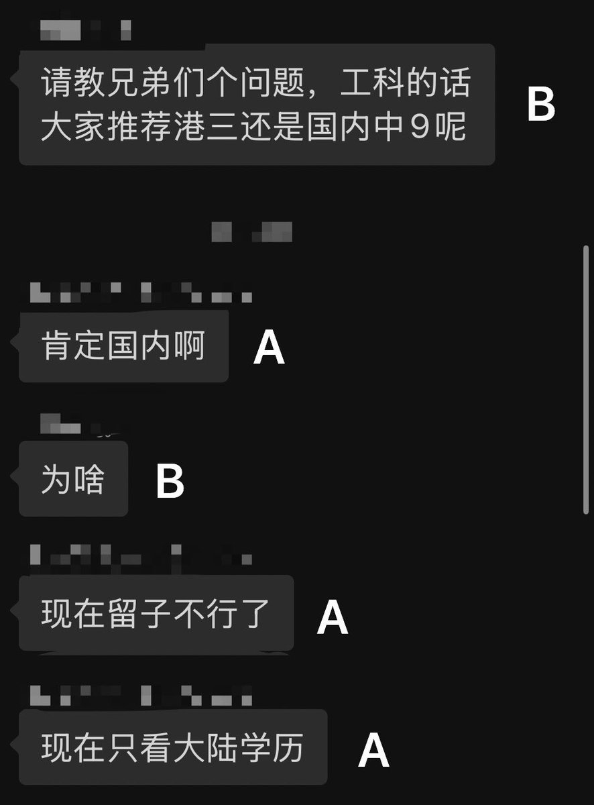
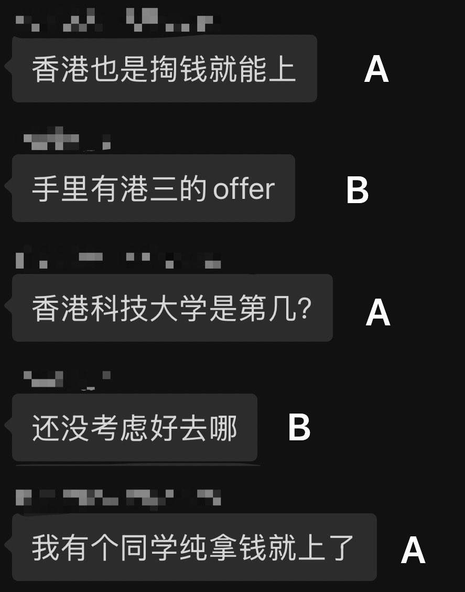
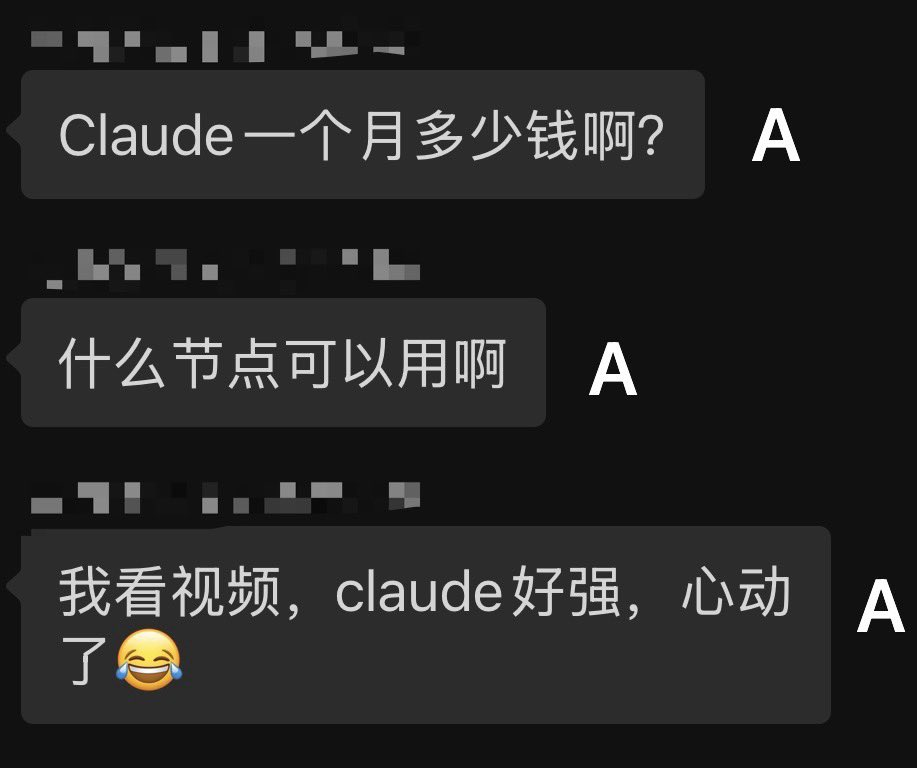

Wilf Lin
@Wilf_Lin
@Nohomework0 国内现在确实不认留学生学历了，不过有国内本科问题不大



双层牛肉汉堡
@Nohomework0
研究生群里有人问要不要放弃国内研究生去港三读硕。有人说现在都不认国外学历了，只认本国的。结果这人第二天问Claude挂什么梯子好，想用Claude😂
一时半会不知道谁更水，也不知道从哪里吐槽，这认知已经差到我不知道怎么吐槽的地步了，只希望这种认知的大陆人保持这样的认知，千万别出国读书。 https://t.co/KxaESbXA7M